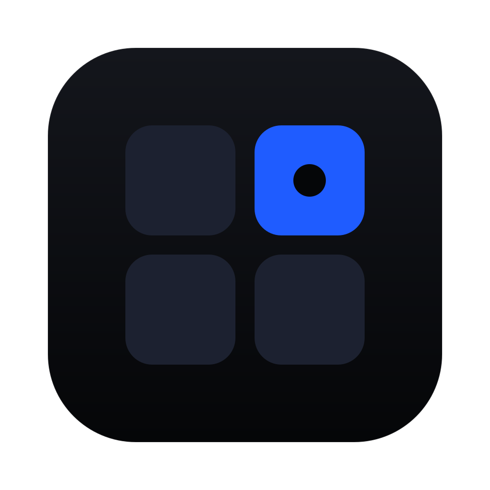
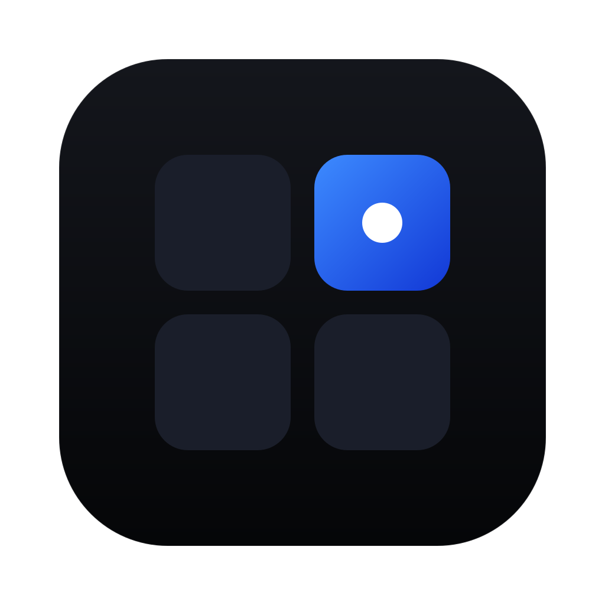
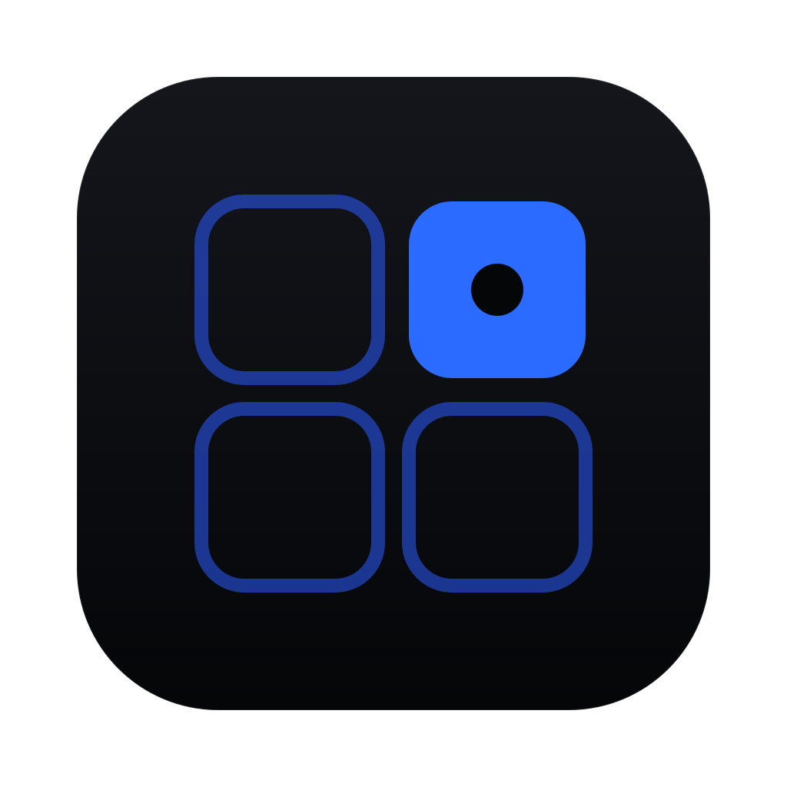
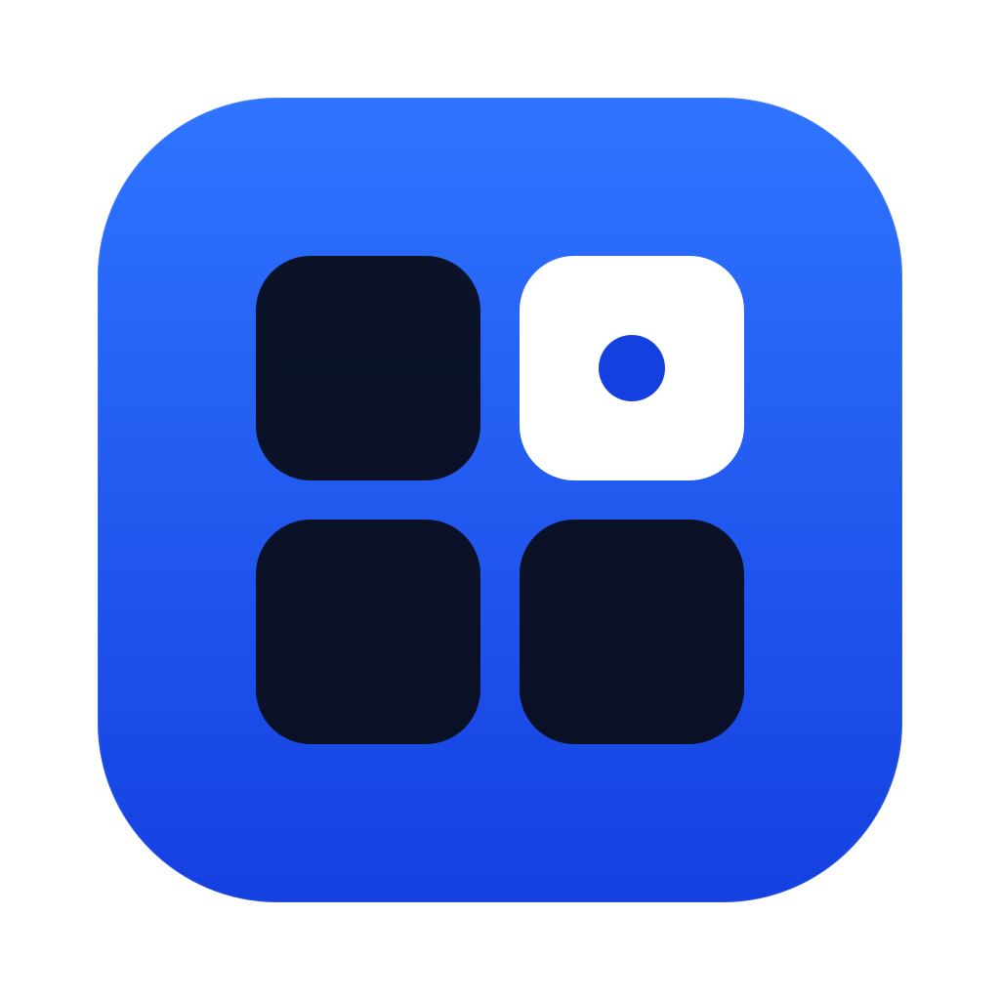

Negro con la casilla activa en azul eléctrico sólido.

Activa en degradado azul eléctrico a cobalto, punto blanco.

Casillas vacías en contorno azul; la activa, sólida.

Fondo azul eléctrico, casillas negras y la activa blanca.